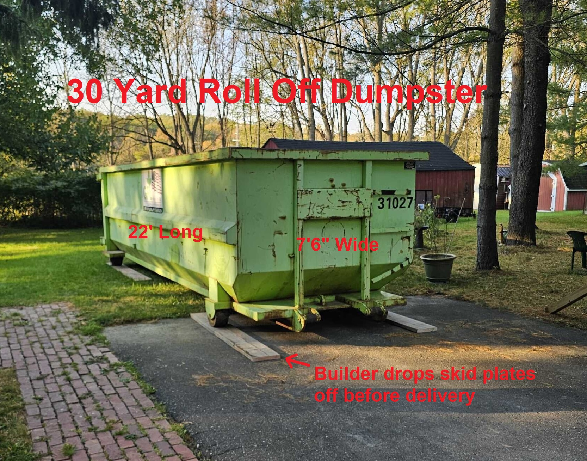
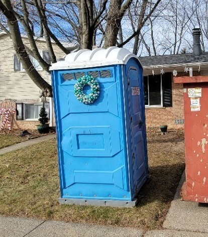
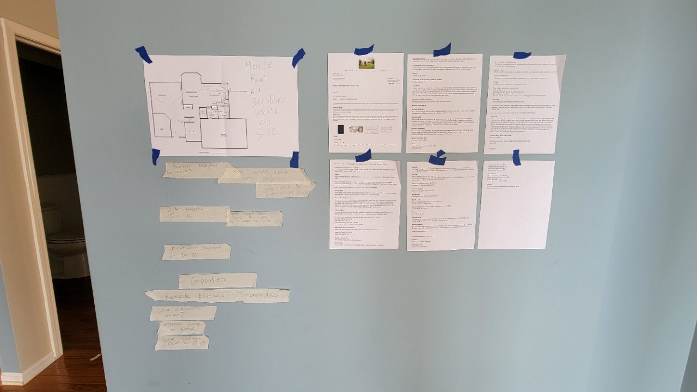
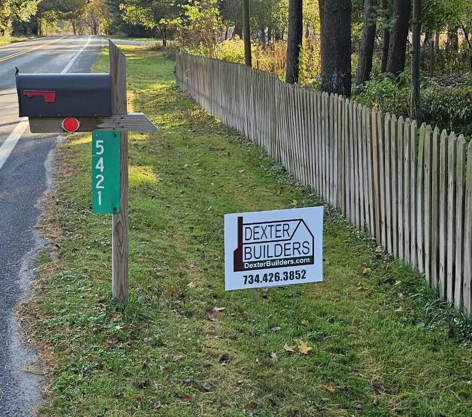
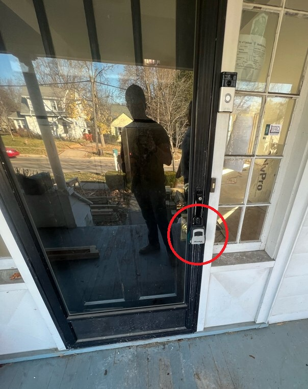

Site Set Up
We start on site when we begin to mobilize and as a remodeler that means turning a home or business into a jobsite. This can include dumpsters, portable toilets, erosion control, paperwork, signs, lockboxes, site protection, etc.
Dumpster
Getting the Dumpster On Site
Roll-off dumpsters are almost always a better value than running debris in pickups or trailers. A 30-yard dumpster often saves you multiple dumping trips and a lot of labor. Make sure the bin fits (most are 7’6” wide and 22’ long for a 30-yarder), check for overhead wires or tree branches, and clear the approach. Mark the delivery spot and drop 4 skid plates (2x12-8’s) where the wheels will sit to keep the client’s driveway protected.
Order the size you’ll need from your local service and confirm delivery. Notify the property owner a week in advance of the drop. Most companies offer a flat fee for a certain period (2–4 weeks), after which rental charges apply. Schedule swaps smartly: start with a 30-yard bin and downsize as the job moves along. Avoid putting masonry, dirt, or shingles in general debris bins—fees and headaches. And don’t overfill; you’ll pay extra and get calls to level the load.
Working with Clients
Let clients know when bins are coming or being swapped so they can keep cars out of the way, and explain potential risk to their driveway from either scratching or rust. Jurisdictions may prohibit placement in the street without permits, which can cost as much as the dumpster itself. Always use those skid plates.

Portable Toilets
Placement and Planning
On most jobs you’ll need a portable toilet for the crew. Sometimes you can use a bath inside the home but it means extra cleaning, stocking, and awkward situations for the client. Renting a portable unit (about $100-200/month) keeps the load off the house, and service companies handle cleaning and supplies.
Pick a spot close enough to the driveway, street—pumper trucks need to park within 20-40 feet. Mark your chosen spot before delivery. You can reposition the unit yourself when empty, but suppliers don't like their toilets sliding around on concrete. If possible, keep the toilet out of sight from the street; otherwise, strangers may help themselves.
Client Heads Up
Tell the client a portable toilet is arriving. Schedule pickup at the end of the job. Don’t place the toilet too far from the road—otherwise, the driver can’t service it.

Paperwork
What to Keep On Site
Print and bring permits, blueprints, window and door specs, cabinet drawings, scope of work or proposal, all appliance/plumbing/lighting specs, the project schedule, and the neighbor letter. Store these in a job box or site folder. Take photos of all work areas before demolition begins for documentation.
Put permits in the front window or job box for inspectors. File everything else somewhere trades can get at it but safe from damage. Date your printouts so the most current set is clearly marked—don’t let anyone build from outdated plans.
Keeping Organized
It helps to make a second “Site Set” of blueprints for inspections; print extras or key pages for trades as needed. Sometimes, laminating heavily-used pages is worthwhile. A neighbor letter introduces yourself to the neighbors and gives them your contact info to head off conflicts with proactive communication.

Jobsite Sign
Setup and Care
A branded sign helps trades, inspectors, and clients find your site. Before you plant it, make sure neighborhood covenants or city regs allow it. Place near the road where it’s visible, and keep it looking good—straighten if knocked crooked or falling over. A sloppy sign projects a sloppy builder.

Lockbox and Access
Setting Up
You’ll need access when the client isn’t around. Get a key and stash it in a coded lockbox near your main entry. If you can, attach the box to something sturdy but not the door handle (to avoid scratches). Installing a temporary electronic lock on a new door is even easier—just take the lock to your next job. Sometimes a garage door code will substitute.

Safety Equipment
Bring a safety bag or kit on day one. Stock it with hard hats, safety glasses, ear protection, dust masks, N95 respirators, a first aid kit, fire extinguisher, and high-visibility vests if working near traffic. Keep it in the job box or a central location where anyone on site can access it. Restock as needed throughout the project.
Resources
- Site Set Up List
- Job Start Materials List
- Jobsite Protection Checklist
- End of Day Reminder List
- Neighbor Letter
Last revised: 11/16/2025
Feedback on this page
Spot an error or have a suggestion? Send a quick note. Name and email are optional.